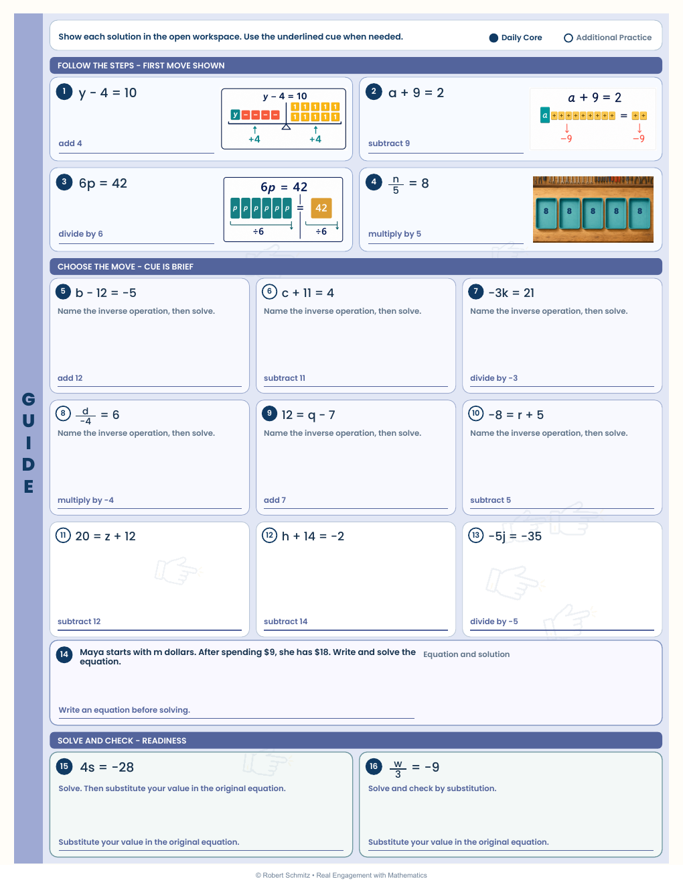
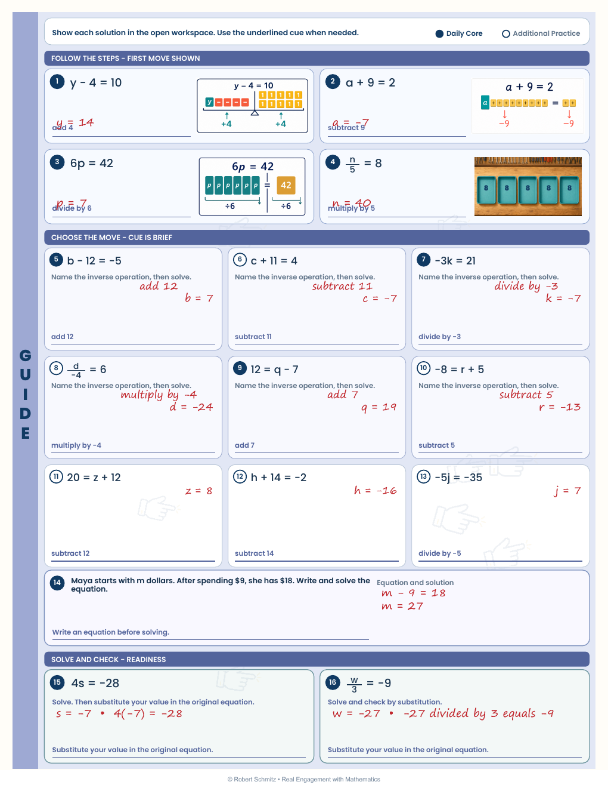
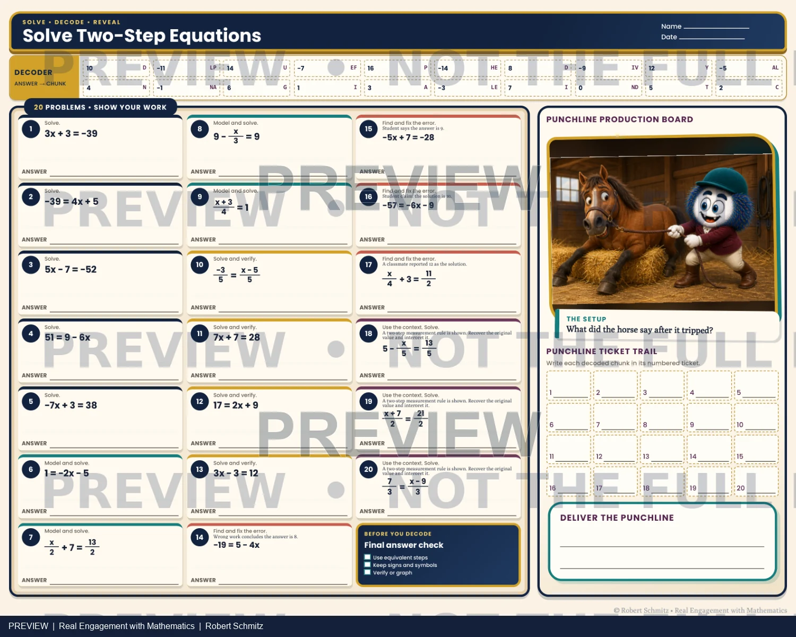
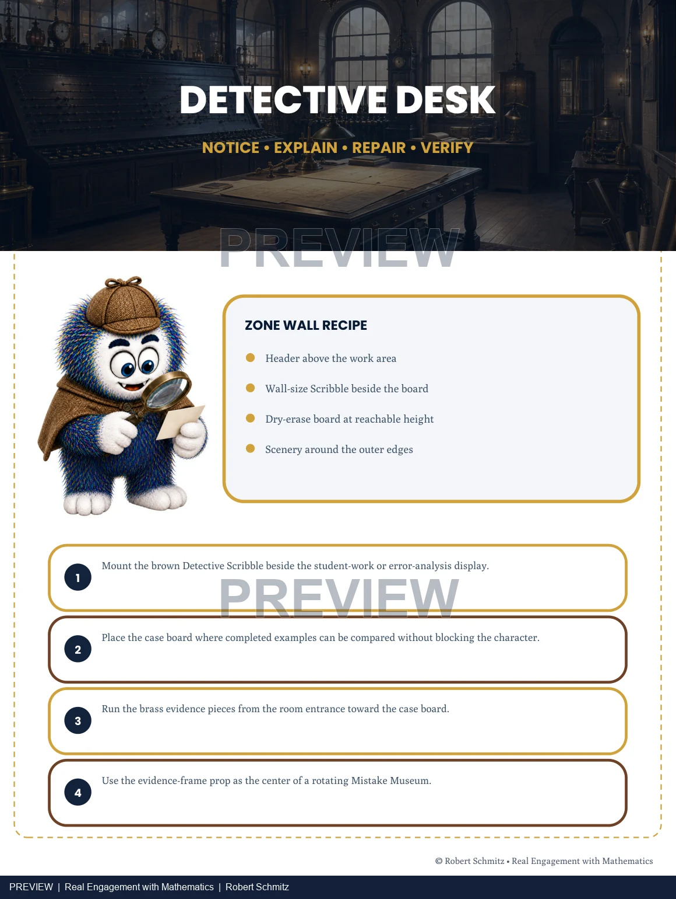

Playable now · Articulate Storyline 360
Graphing Slope-Intercept Form
A complete 60-slide lesson with guided practice, feedback, checkpoint rewards, and a 20-question quiz. Explore the native Storyline experience.
Take the quick course tour →Portfolio
Learning problems, design decisions, and evidence you can inspect. Each project identifies what is available to review.
Playable now · Articulate Storyline 360
A complete 60-slide lesson with guided practice, feedback, checkpoint rewards, and a 20-question quiz. Explore the native Storyline experience.
Take the quick course tour →

See how the student experience and facilitator support fit together, from worked examples to independent practice.
Inspect the lesson materials →A 16-slide Storyline storyboard with learner decisions, feedback, and a five-question quiz plan. Storyboard and working HTML prototype available.
Read the interaction design →A facilitator agenda and transfer job aid built around educators’ own upcoming lessons.
Explore the session plan →Open the conversation, hear the obstacle, and agree on a handoff plan in a three-decision scenario.
Try the scenario →A task-to-evidence map and matching student / teacher pages show how error analysis informs feedback.
Inspect the assessment sample →A concise account of the checks I use to review candidate explanations and assessment items.
Read the workflow →More evidence from the classroom

Assignment selection and varied task types from one printable bank.
Inspect the materials →
Compare the student activity with its worked teacher support.
Inspect the materials →
Room layouts, routine cues, and guidance for the instructor.
Inspect the materials →